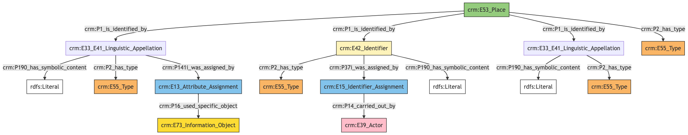

Location
Author: Denitsa Nenova, George Bruseker
Version: 1.0
The Location model is intended to enable the representation and sharing of data relevant to geographic places used to identify the locations of items and events over time. Typical instances of Location are cities, states and countries, but also buildings, rooms, shelves, etc. The Location model is intended solely for the documentation of real, geometrically definable places. In the context of the CSDM, it is used primarily as a reference model.
| Name | URI | |
|---|---|---|
| Root Ontology Node | E53 Place | https://cidoc-crm.org/Entity/E53-Place/version-7.1.1 |
| Type Differentiator | N/A | N/A |
The location model allows the documentation of the following kinds of information:
| Information Category | Information Collections | Description |
|---|---|---|
| Names and Classifications | Names/Alternative Names/Identifiers/Type | The researcher can document various names and classification regarding the Location of a thing. |
| Parthood | Group Membership | The researcher can document the membership of the Location to another place. |
| Location | Location Coordinates | The researcher can document a set of geographic coordinates which have been attributed the documented place enabling its localization in a reference space. |
| Description | Description | The researcher can document various free text descriptions of the Location . |
| Documentation | Citation/Image/External URI | The researcher can document citations relative to the person, link to images of the Location and document external URIs of documentation for the same Location . |
Location Names and Classifications
The attribution of names and types to a place, as with other entities, is a basic human activity. A chief factor in disambiguating places lies in understanding the various names and identifiers that have been given to them at different moments in their individual histories. Historical places often receive different names according to the groups naming it, as well as receiving different kinds of names according to contexts and during different historical moments. Likewise, additional classifiers of a place, such as how it has been formally classified, give it important distinguishing characteristics. Because the type of a place is a socially-related factor, dependent on how the place is appropriated/used.
| Filed ID | Name | Description | Data Type | CRM Path |
|---|---|---|---|---|
| fie_1 | Location Identifier | This field is used to record an identifier attributed to the documented Location . | String | --> P1 --> E42[1_1] --> P190 --> rdfs:Literal |
| fie_2 | Location Type Type | This field is used to record the type of the identifier attributed to the documented Location . | Concept | --> P1 --> E42[1_1] --> P2 --> E55[2_1] |
| fie_3 | Location Type Provider | This field is used to record the institution, group or individual responsible for providing the documented Location's identifier. | Reference Model [Person/Group] | --> P1 --> E42[1_1] --> P37i --> E15[3_1] --> P14 --> E39[3_2] |
| fie_5 | Location Name | This field is used to record the main name attributed to the documented Location. | String | --> P1 --> E33_E41[5_1] --> P190 --> rdfs:Literal --> P1 --> E33_E41[5_1] --> P2 --> E55[5_2]{'preferred terms'} |
| fie_10 | Location Alias | This field is used to record an alternative name under which the documented Location is known. | String | --> P1 --> E33_E41[10_1] --> P190 --> rdfs:Literal |
| fie_11 | Location Alias Type | This field is used to record the type of the alternative name that has been attributed to the documented Location. | Concept | --> P1 --> E33_E41[10_1] --> P2 --> E55[11_1] |
| fie_16 | Location Alias Source | This field is used to record the source on the basis of which the organization attributing the alternative name use based their attribution. | Reference Model [Bibliographic Item/Image] | --> P1 --> E33_E41[10_1] --> P141i --> E13[15_1] --> P16 --> E73[16_1] |
| fie_17 | Location Type | This field is used to record the formal type of the documented Location. | Concept | --> P2 --> E55[17_1] |
- Location Names and Classifications Ontology Graph

- Location Names and Classifications RDF
@prefix crm: <http://www.cidoc-crm.org/cidoc-crm/> .
@prefix rdfs: <http://www.w3.org/2000/01/rdf-schema#> .
<https://census.de/example/place/E53> a crm:E53_Place ;
crm:P1_is_identified_by <https://example.org/name/fie_10_1>,
<https://example.org/name/fie_1_1>,
<https://example.org/name/fie_5_1> ;
crm:P2_has_type <https://example.org/type/fie_17_1> .
<http://vocab.getty.edu/aat/300404670> a crm:E55_Type ;
rdfs:label "preferred terms" .
<https://example.org/actor/fie_3_2> a crm:E39_Actor .
<https://example.org/conceptual_object/fie_16_1> a crm:E73_Information_Object .
<https://example.org/event/fie_15_1> a crm:E13_Attribute_Assignment ;
crm:P16_used_specific_object <https://example.org/conceptual_object/fie_16_1> .
<https://example.org/event/fie_3_1> a crm:E15_Identifier_Assignment ;
crm:P14_carried_out_by <https://example.org/actor/fie_3_2> .
<https://example.org/name/fie_10_1> a crm:E33_E41_Linguistic_Appellation ;
crm:P141i_was_assigned_by <https://example.org/event/fie_15_1> ;
crm:P190_has_symbolic_content "content" ;
crm:P2_has_type <https://example.org/type/fie_11_1> .
<https://example.org/name/fie_1_1> a crm:E42_Identifier ;
crm:P190_has_symbolic_content "content" ;
crm:P2_has_type <https://example.org/type/fie_2_1> ;
crm:P37i_was_assigned_by <https://example.org/event/fie_3_1> .
<https://example.org/name/fie_5_1> a crm:E33_E41_Linguistic_Appellation ;
crm:P190_has_symbolic_content "content" ;
crm:P2_has_type <http://vocab.getty.edu/aat/300404670> .
<https://example.org/type/fie_11_1> a crm:E55_Type .
<https://example.org/type/fie_17_1> a crm:E55_Type .
<https://example.org/type/fie_2_1> a crm:E55_Type .
- Location Names and Classifications JSON-LD
{
"@context": "https://linked.art/ns/v1/linked-art.json",
"@graph": [
{
"classified_as": [
"http://vocab.getty.edu/aat/300404670"
],
"content": "content",
"id": "https://example.org/name/fie_5_1",
"type": "Name"
},
{
"classified_as": [
"https://example.org/type/fie_2_1"
],
"content": "content",
"id": "https://example.org/name/fie_1_1",
"identifier_assigned_by": [
"https://example.org/event/fie_3_1"
],
"type": "Identifier"
},
{
"id": "https://example.org/actor/fie_3_2",
"type": "Actor"
},
{
"assigned_by": [
"https://example.org/event/fie_15_1"
],
"classified_as": [
"https://example.org/type/fie_11_1"
],
"content": "content",
"id": "https://example.org/name/fie_10_1",
"type": "Name"
},
{
"_label": "preferred terms",
"id": "http://vocab.getty.edu/aat/300404670",
"type": "Type"
},
{
"classified_as": [
"https://example.org/type/fie_17_1"
],
"id": "https://census.de/example/place/E53",
"identified_by": [
"https://example.org/name/fie_10_1",
"https://example.org/name/fie_5_1",
"https://example.org/name/fie_1_1"
],
"type": "Place"
},
{
"carried_out_by": [
"https://example.org/actor/fie_3_2"
],
"id": "https://example.org/event/fie_3_1",
"type": "IdentifierAssignment"
},
{
"id": "https://example.org/conceptual_object/fie_16_1",
"type": "InformationObject"
},
{
"id": "https://example.org/type/fie_11_1",
"type": "Type"
},
{
"id": "https://example.org/type/fie_2_1",
"type": "Type"
},
{
"id": "https://example.org/type/fie_17_1",
"type": "Type"
},
{
"id": "https://example.org/event/fie_15_1",
"type": "AttributeAssignment",
"used_specific_object": [
"https://example.org/conceptual_object/fie_16_1"
]
}
]
}
Location Parthood
The mereo-topological breakdown of places is crucial to understanding the relative relations between places. This information category gathers together the basic descriptors typically deployed to this end. In the study and documentation of place, this is a highly researched topic with extremely fine grained analysis available. In this base model, we represent the relation of one place falling within another. This representation allows both for documentation of contemporaneous containment relations but also the expression of a place falling within another place or containing one at a particular historical time.
| Filed ID | Name | Description | Data Type | CRM Path |
|---|---|---|---|---|
| fie_35 | Location Parts | This field is used to record individually documented places which form part of the documented Location. | Reference Model [Location] | --> P89i --> E53[35_1] |
- Location Parthood Ontology Graph
- Location Parthood RDF
@prefix crm: <http://www.cidoc-crm.org/cidoc-crm/> .
<https://census.de/example/place/E53> a crm:E53_Place ;
crm:P89i_contains <https://example.org/place/fie_35_1> .
<https://example.org/place/fie_35_1> a crm:E53_Place .
- Location Parthood JSON-LD
{
"@context": "https://linked.art/ns/v1/linked-art.json",
"@graph": [
{
"crm:P89i_contains": {
"id": "https://example.org/place/fie_35_1"
},
"id": "https://census.de/example/place/E53",
"type": "Place"
},
{
"id": "https://example.org/place/fie_35_1",
"type": "Place"
}
]
}
Location Location
This category documents the spatial expresion of the location's coordinates.
| Filed ID | Name | Description | Data Type | CRM Path |
|---|---|---|---|---|
| fie_92 | Location Coordinates | This field is used to record a set of geographic coordinates which have been attributed the documented Location enabling its localization in a reference space. | GeoJson | --> P168 --> geo:wkt |
- Location Location Ontology Graph
- Location Location RDF
@prefix crm: <http://www.cidoc-crm.org/cidoc-crm/> .
@prefix geo: <http://www.opengis.net/ont/geosparql/> .
<https://census.de/example/place/E53> a crm:E53_Place ;
crm:P168_place_is_defined_by ""^^geo:wkt .
- Location Location JSON-LD
{
"@context": "https://linked.art/ns/v1/linked-art.json",
"defined_by": {
"@value": "",
"type": "http://www.opengis.net/ont/geosparql/wkt"
},
"id": "https://census.de/example/place/E53",
"type": "Place"
}
Location Description
Places are the subjects of innumerable descriptions that provide a wide range of information with regards to the meaning and use of a place. Such descriptions are of use in a scholarly understanding of a place just in case we are able to track the provenance of such elocutions in a systematic fashion. Such an aim drives the need for the tracking of description information as a separate category. The descriptors necessary to this task are documented in the table below.
| Filed ID | Name | Description | Data Type | CRM Path |
|---|---|---|---|---|
| fie_188 | Location Description | This field is used to record a description in free text of the documented Location. | String | --> P129i --> E33[188_1] --> P190 --> rdfs:Literal |
| fie_190 | Location Description Type | This field is used to record the type of description given of the documented Location. | Concept | --> P129i --> E33[188_1] --> P2 --> E55[190_1] |
| fie_191 | Location Description Author | This field is used to record the author of the description given of the documented Location. | Reference Model [Person/Group] | --> P129i --> E33[188_1] --> P94i --> E65[191_1]>-P14 --> E39[191_2] |
| fie_192 | Location Description Earliest Date | This field is used to record the earliest possible date for the creation of the description of the documented Location. | Date | --> P129i --> E33[188_1] --> P94i --> E65[191_1] --> P4 --> E52[191_2] --> P82a --> xsd:dateTime |
| fie_193 | Location Description Latest Date | This field is used to record the latest possible date for the creation of the description of the documented Location. | Date | --> P129i --> E33[188_1] --> P94i --> E65[191_1] --> P4 --> E52[191_2] --> P82b —> xsd:dateTime |
- Location Description Ontology Graph
- Location Description RDF
@prefix crm: <http://www.cidoc-crm.org/cidoc-crm/> .
<https://census.de/example/place/E53> a crm:E53_Place ;
crm:P129i_is_subject_of <https://example.org/conceptual_object/fie_188_1> .
<https://example.org/actor/fie_191_2> a crm:E39_Actor .
<https://example.org/conceptual_object/fie_188_1> a crm:E33_Linguistic_Object ;
crm:P190_has_symbolic_content "content" ;
crm:P2_has_type <https://example.org/type/fie_190_1> ;
crm:P94i_was_created_by <https://example.org/event/fie_191_1> .
<https://example.org/event/fie_191_1> a crm:E65_Creation ;
crm:P14_carried_out_by <https://example.org/actor/fie_191_2> ;
crm:P4_has_time-span <https://example.org/time_span/fie_192_1> .
<https://example.org/time_span/fie_192_1> a crm:E52_Time-span ;
crm:P81a_begin_of_the_begin "content" ;
crm:P81b_end_of_the_end "content" .
<https://example.org/type/fie_190_1> a crm:E55_Type .
- Location Description JSON-LD
{
"@context": "https://linked.art/ns/v1/linked-art.json",
"@graph": [
{
"carried_out_by": [
"https://example.org/actor/fie_191_2"
],
"id": "https://example.org/event/fie_191_1",
"timespan": "https://example.org/time_span/fie_192_1",
"type": "Creation"
},
{
"id": "https://census.de/example/place/E53",
"subject_of": [
"https://example.org/conceptual_object/fie_188_1"
],
"type": "Place"
},
{
"id": "https://example.org/actor/fie_191_2",
"type": "Actor"
},
{
"id": "https://example.org/type/fie_190_1",
"type": "Type"
},
{
"classified_as": [
"https://example.org/type/fie_190_1"
],
"content": "content",
"created_by": "https://example.org/event/fie_191_1",
"id": "https://example.org/conceptual_object/fie_188_1",
"type": "LinguisticObject"
},
{
"crm:P81a_begin_of_the_begin": "content",
"crm:P81b_end_of_the_end": "content",
"id": "https://example.org/time_span/fie_192_1",
"type": "crm:E52_Time-span"
}
]
}
Location Documentaion
This information category unites referential information about the documented Location, providing contextual data about it.
| Filed ID | Name | Description | Data Type | CRM Path |
|---|---|---|---|---|
| fie_204 | Location External URL | The field is used to record the sameness between the Location described and an external authority. | uri | --> L54 --> E1[204_1] |
| fie_195 | Location Image | This field is used to record a digital image which is representative of the documented Location. | Reference Model [Image] | --> P138i --> E36/D9[195_1] |
| fie_196 | Location Citation | This field is used to record a citation to reference documentation for the documented Location. | String | --> P129i --> E33[196_1] --> rdf:value --> rdfs:Literal --> P129i --> E33[196_1] --> P2 --> E55 "Citation" |
| fie_197 | Location Citation Source | This field is used to record the source used for generating the citation for the documented Location. | Reference Model [Bibliographic Entity] | --> P129i --> E33[196_1] --> P106i --> E33[197_1] |
- Location Documentation Ontology Graph
- Location Documentation RDF
@prefix crm: <http://www.cidoc-crm.org/cidoc-crm/> .
@prefix rdfs: <http://www.w3.org/2000/01/rdf-schema#> .
<https://census.de/example/place/E53> a crm:E53_Place ;
crm:L54_is_same-as <https://example.org/entity/fie_204_1> ;
crm:P129i_is_subject_of <https://example.org/conceptual_object/fie_196_1> ;
crm:P138i_has_representation <https://example.org/conceptual_object/fie_195_1> .
<https://example.org/conceptual_object/fie_195_1> a crm:D9_Data_Object,
crm:E36_Visual_Item .
<https://example.org/conceptual_object/fie_196_1> a crm:E33_Linguistic_Object ;
crm:P106i_forms_part_of <https://example.org/conceptual_object/fie_197_1> ;
crm:P190_has_symbolic_content "content" ;
crm:P2_has_type <https://example.org/type/fie_196_1> .
<https://example.org/conceptual_object/fie_197_1> a crm:E33_Linguistic_Object .
<https://example.org/entity/fie_204_1> a crm:E1_CRM_Entity .
<https://example.org/type/fie_196_1> a crm:E55_Type ;
rdfs:label "Citation" .
- Location Documentation JSON-LD
{
"@context": "https://linked.art/ns/v1/linked-art.json",
"@graph": [
{
"id": "https://example.org/conceptual_object/fie_197_1",
"type": "LinguisticObject"
},
{
"id": "https://example.org/conceptual_object/fie_195_1",
"type": [
"crm:D9_Data_Object",
"VisualItem"
]
},
{
"crm:L54_is_same-as": {
"id": "https://example.org/entity/fie_204_1"
},
"id": "https://census.de/example/place/E53",
"representation": [
"https://example.org/conceptual_object/fie_195_1"
],
"subject_of": [
"https://example.org/conceptual_object/fie_196_1"
],
"type": "Place"
},
{
"_label": "Citation",
"id": "https://example.org/type/fie_196_1",
"type": "Type"
},
{
"id": "https://example.org/entity/fie_204_1",
"type": "CRMEntity"
},
{
"classified_as": [
"https://example.org/type/fie_196_1"
],
"content": "content",
"crm:P106i_forms_part_of": {
"id": "https://example.org/conceptual_object/fie_197_1"
},
"id": "https://example.org/conceptual_object/fie_196_1",
"type": "LinguisticObject"
}
]
}